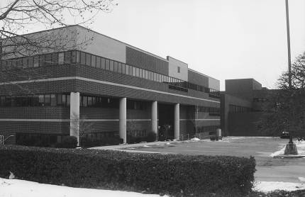

We are located on the Pittsburgh/Wilkinsburg line ...
|
 |
Click here for a full set of map controls, and for driving directions. |
The following Port Authority bus routes stop right in front of LifeCare Hospital, next door
to us:
Also, Wilkinsburg Station (on the East Bus Way) is a 0.4 mile walk from our office. From the station, walk along the busway toward Edgewood / Swissvale, go down the stairs at Penn Avenue, then double back along Penn Avenue toward our building. |